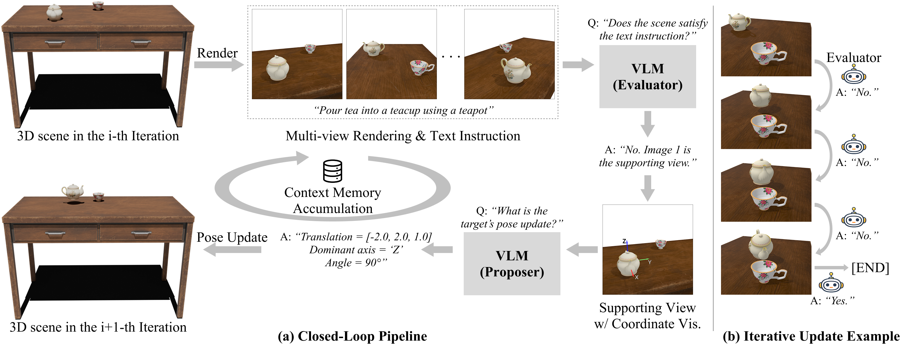

Vision-Language Models (VLMs) exhibit strong visual reasoning capabilities, yet they still struggle with 3D understanding. In particular, VLMs often fail to infer a text-consistent goal 6D pose of a target object in a 3D scene. However, we find that with some inference-time techniques and iterative reasoning, VLMs can achieve dramatic performance gains. Concretely, given a 3D scene represented by an RGB-D image (or a compositional scene of 3D meshes) and a text instruction specifying a desired state change, we repeat the following loop: observe the current scene; evaluate scene validity; propose a pose update for the target object; apply the update; and render the updated scene. Through this closed-loop interaction, the VLM effectively acts as an agent. We further introduce three inference-time techniques that are essential to this closed-loop process: (i) multi-view reasoning with supporting view selection, (ii) object-cetric coordinate-system visualization, and (iii) single-axis rotation prediction. Without any additional fine-tuning or new modules, our approach surpasses prior methods at predicting the text-guided goal 6D pose of the target object. It works consistently across both closed-source and open-source VLMs. Moreover, when combining our 6D pose prediction with simple robot motion planning, it enables more successful robot manipulation than existing methods. Finally, we conduct an ablation study to demonstrate the necessity of each proposed technique.

@article{vlmpose,
title={VLMs as Agents for Text-Guided Closed-Loop Object 6D Pose Rearrangement},
author={Baik, Sangwon and Kim, Gunhee and Choi, Mingi and Joo, Hanbyul},
journal={arXiv:2511.20446},
year={2026}
}